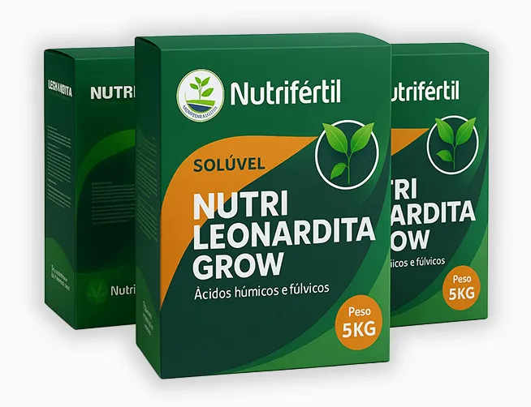

AgroForte
AgroForte
Nutri Leonardita — Ácidos Húmicos e Fúlvicos 100% solúveis
Solo vivo, raiz forte e maior produtividade em grãos, hortaliças, frutíferas, café e também em estufas de grow (substratos e fertirrigação). Fórmula premium com húmicos 90% e fúlvicos 10%, COT 34,8% e CTC 2.415 mmolc/kg.
Por que funciona
- Húmicos 90%: estrutura o solo/substrato, reduz compactação e aumenta retenção de água → raiz profunda.
- Fúlvicos 10%: quelam/complexam nutrientes, turbinando a absorção e a eficiência da adubação.
- COT 34,8% + CTC 2.415: mais troca de cátions e desbloqueio de fósforo ligado a Fe/Al.
- Fitormônios naturais: estimulam brotação, alongamento e área foliar.

Nutrientes (garantias)
| Nutriente | % / valor |
|---|---|
| Ácido Húmico | 90,0% m/m |
| Ácido Fúlvico | 10,0% m/m |
| Carbono Orgânico Total (COT) | 34,8% |
| Potássio (K) | 5% |
| Nitrogênio Total (N) | 2,3% |
| Capacidade de Troca de Cátions (CTC) | 2.415 mmolc/kg |
| Solubilidade em água | 100% solúvel |
Posicionamento prático
- Pré-plantio e arranque: formar raízes e estrutura do solo/substrato.
- Pós-transplante e pós-estresse: seca, calor, salinidade, fitotoxicidade.
- Solos arenosos/empobrecidos ou áreas com baixa CTC e queda de MO.
- Pré-florada e enchimento: sustentar demanda nutricional elevada.
Uso em Grow (estufas)
- Compatível com substrato de coco, turfas e mixes (“soil”).
- Aplicar na irrigação (fertirrigação) ou via foliar como condicionador/carreador.
- pH de calda 5,5–6,5 e substrato úmido para melhor absorção.
- Alta compatibilidade de tanque; faça teste de jarra antes.
Benefícios visíveis
- Mais aeração e agregação → maior volume explorado pelas raízes.
- Maior retenção de água → menor estresse hídrico e dossel estável.
- Maior eficiência de NPK e melhor aproveitamento da adubação.
- Solo vivo: ativa microrganismos e acelera mineralização.
- Raiz densa e profunda, pegamento superior e enchimento uniforme.
Perguntas frequentes
Serve para agricultura e para grow indoor?
Sim. A Nutri Leonardita foi pensada para lavouras e estufas. É 100% solúvel, fácil de usar em vasos, bancadas e sistemas de fertirrigação.
Ajuda a economizar fertilizante?
Ao elevar a CTC e quelar nutrientes, reduz perdas por fixação/lixiviação e aumenta a eficiência da adubação.
Posso combinar com óleo de neem ou biológicos?
Em geral, sim. Mantendo pH 5,5–6,5 e fazendo teste de jarra, a compatibilidade é alta. Para biológicos específicos, peça orientação no WhatsApp.